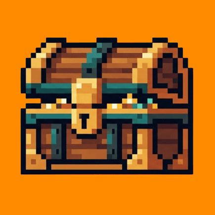

Automated Rucoy
A free community app for Rucoy Online players, on Android and Windows.
What the app does
- Player market: list and find items, accounts, gold and services, with price alerts and a shopping cart.
- Deal rooms: private rooms where two players agree on a trade, with a middleman when they want one.
- Boss calls: players tell each other when a boss appears, with timers and a weekly leaderboard.
- Chat and guilds: talk to the community, follow guilds and see how they grow.
- Game data and tools: items, monsters, drops, a forge calculator, a training calculator and character progress.
- Languages: the app's own texts are available in many languages.
How you sign in
You can look around as a guest, or sign in with Discord or Google. Google sign-in is only used to know it is you. To buy or sell, you also link your Rucoy character. We never ask for your game password.
Not affiliated with Rucoy Online
Automated Rucoy is an independent community project. It is not affiliated with, endorsed by, sponsored by or connected to Rucoy Online or its developers. Game names and artwork belong to their owners.